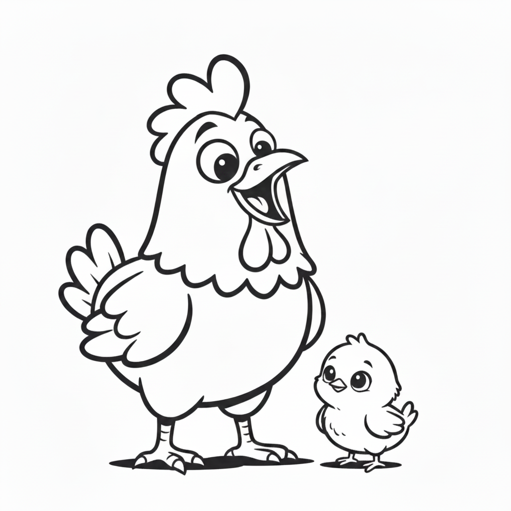
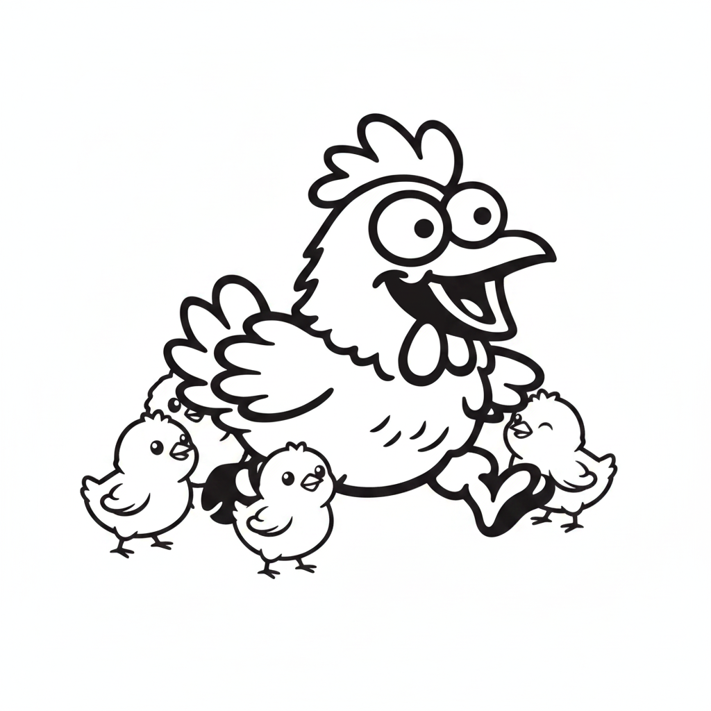

鶏を飼育してきた中で、「あれ、今この子、仲間を気にかけているな」と感じる瞬間が何度もありました。弱った鶏のそばから離れない個体がいたり、オスがメスたちの様子をずっと窺っていたり。ただ、これは人間側の思い込みなのか、それとも本当に鶏には「仲間を思いやる力」が備わっているのか。この疑問に、科学はどこまで答えを出しているのでしょうか。今回は、鶏の共感能力を調べた研究論文をもとに、意外な結果も含めてわかりやすく紹介します。
共感という感情の土台になる能力を鶏が持っているかを確かめるため、ある研究チームが行った実験があります。母鶏とヒナを、次の4つの状況に置き、母鶏の心拍数や目の周りの温度、行動の変化を細かく記録しました。
具体的には、ヒナに短い「プシュッ」という空気を吹きかけて軽い驚きを与え、その様子を見ている母鶏の反応を測定するという方法です。結果、母鶏はヒナに空気が吹きかけられた時だけ、次のような明確な変化を見せました。
| 観察された変化 | 内容 |
|---|---|
| 心拍数 | 上昇（ヒナへの空気吹きかけ時のみ） |
| 目の周りの温度 | 低下（血流の変化を示すサイン） |
| 警戒姿勢 | 増加（じっと立って周囲を見張る） |
| 羽づくろい | 減少（リラックス行動が減る） |
| 鳴き声 | ヒナに向けた鳴き声が増加 |
面白いのは、ヒナ自身はそれほど大きな苦痛のサインを出していなかったにもかかわらず、母鶏の側がはっきりと反応した点です。これは、母鶏がヒナの状態を「察知」し、自分の感情や体まで動かしていたことを意味します。研究チームはこれを、共感という感情を支える土台のひとつだと結論づけました。

ここからが今回いちばん驚いた点です。同じ研究チームが、今度は「見慣れた大人の鶏」に同じ空気を吹きかけ、それを隣で見ていた別の鶏（観察者）の反応を調べる追加実験を行いました。もし鶏が仲間全般に共感するなら、この時も観察者の心拍数や行動に変化が出るはずです。
観察していた鶏は、自分自身に空気を吹きかけられた時にはきちんと驚きの反応を見せたにもかかわらず、隣の仲間が空気を吹きかけられている場面では、心拍数にも行動にもほとんど変化が見られませんでした。
| 比較項目 | 母鶏×ヒナの実験 | 大人同士の実験 |
|---|---|---|
| 心拍数の変化 | あり（上昇） | なし |
| 目の温度変化 | あり（低下） | なし |
| 鳴き声・行動変化 | あり（呼びかけ増加） | ほぼなし |
同じ手法、同じ感度で測定していながら、この差です。研究チームは、鶏の「仲間を思う力」は無条件にすべての鶏へ向くわけではなく、少なくともこの実験環境では、親子という特別な関係の中でこそ強く働く可能性を指摘しています。
考えられる理由はいくつかあります。ひとつは、鶏の「仲間を思う力」がもともと、ヒナを守り育てるという子育ての場面で発達してきた可能性です。自分の遺伝子を残すヒナの命が脅かされることは、鶏にとって大人の仲間が驚く場面よりも切実な出来事なのかもしれません。もうひとつは、実験の条件そのものの違いです。ヒナの実験では複数のヒナが同時に驚かされていたのに対し、大人同士の実験では一羽だけが対象でした。刺激の大きさや、見ている側にとっての「深刻さ」が違った可能性も否定できません。
つまり今回の結果は「鶏には仲間を思う気持ちが一切ない」ということではなく、「少なくとも短時間の実験室環境では、見慣れた大人同士の間でその反応を測定できなかった」ということにとどまります。ここが、研究結果を読むときに注意したいポイントです。
筆者自身の飼育経験でも、体調を崩した鶏のそばにずっと寄り添っていた個体や、群れの中で特定の鶏を気にかけているような様子を見たことがあります。実際、保護鶏を育てている団体の記録の中にも、体力を落とした仲間から3週間離れずに付き添い続けた鶏の様子が紹介されています。これは実験結果と矛盾するのでしょうか。
おそらく答えは「矛盾しない」です。実験は初対面に近い一時的な場面での反応を測ったものですが、農場や飼育下の群れでは、鶏同士が長い時間をかけて個体を見分け、順位や関係性を築いています。人間同士でも、見知らぬ人の些細な不調にはあまり心が動かなくても、長年の友人が体調を崩せば強く心配するように、鶏にとっても「関係の深さ」が反応の出方を左右している可能性があります。実験で測定されたのは共感の「土台」の部分であり、日々の関係の積み重ねの中でそれが「特定の仲間への思いやり」として表れているのかもしれません。

この一連の研究が持つ意味は、単に「鶏は賢い」という話にとどまりません。母鶏がヒナの苦痛に体ごと反応するという事実は、育雛期の親子を無理に引き離すことが、母鶏にとって強いストレスになりうることを示しています。飼育環境を考えるうえでも、こうした感情の土台をふまえることが、より良い動物福祉につながっていきます。
鶏の「仲間を思う力」は、単純な一言では片づけられない、意外と繊細なしくみでした。母鶏とヒナの間では、体の反応にまで表れるほどはっきりとした共感の土台が確認された一方で、見慣れた大人同士では同じ反応が見られないという結果は、多くの人の予想を裏切るものだったのではないでしょうか。それでも、長い時間をかけて築かれた群れの中の関係が、実験室では測れない「思いやり」として表れている可能性は十分にあります。鶏をただの家畜として見るのではなく、こうした感情の起伏を持つ生き物として理解することが、飼育や動物福祉を考えるうえでの第一歩になるはずです。